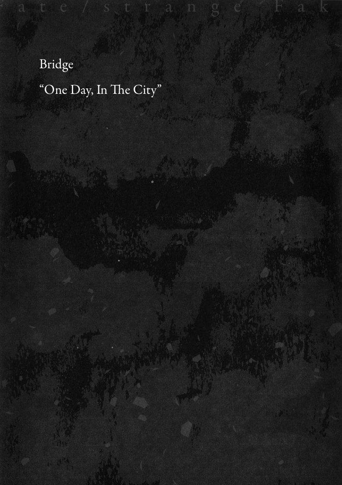
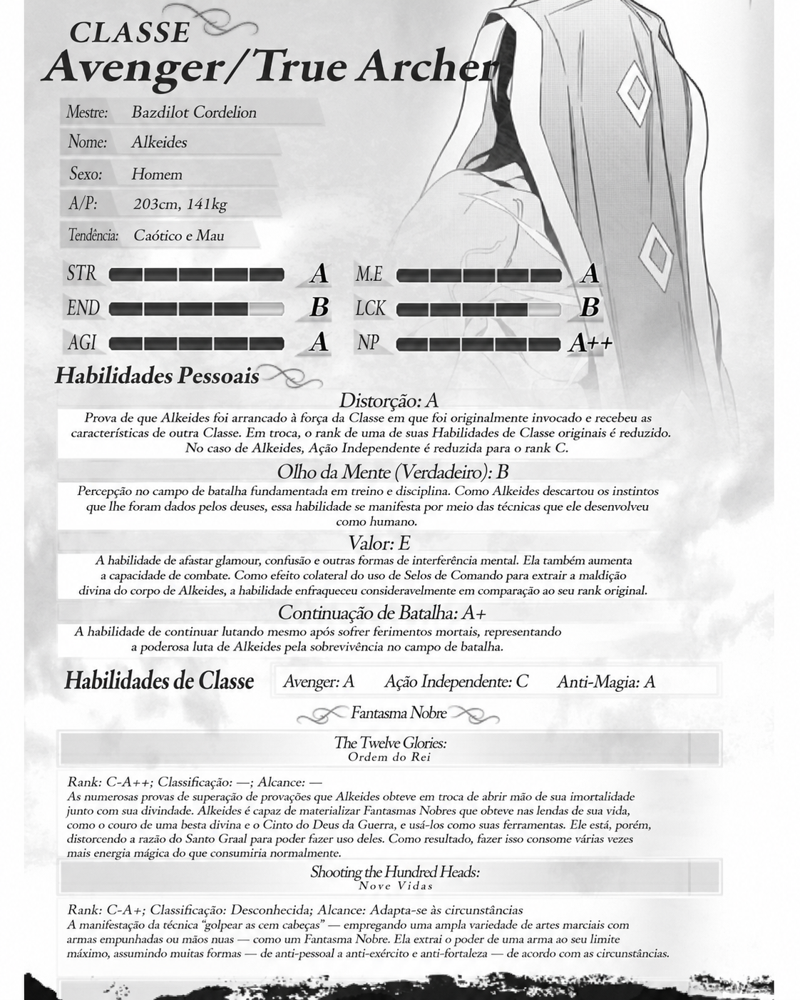
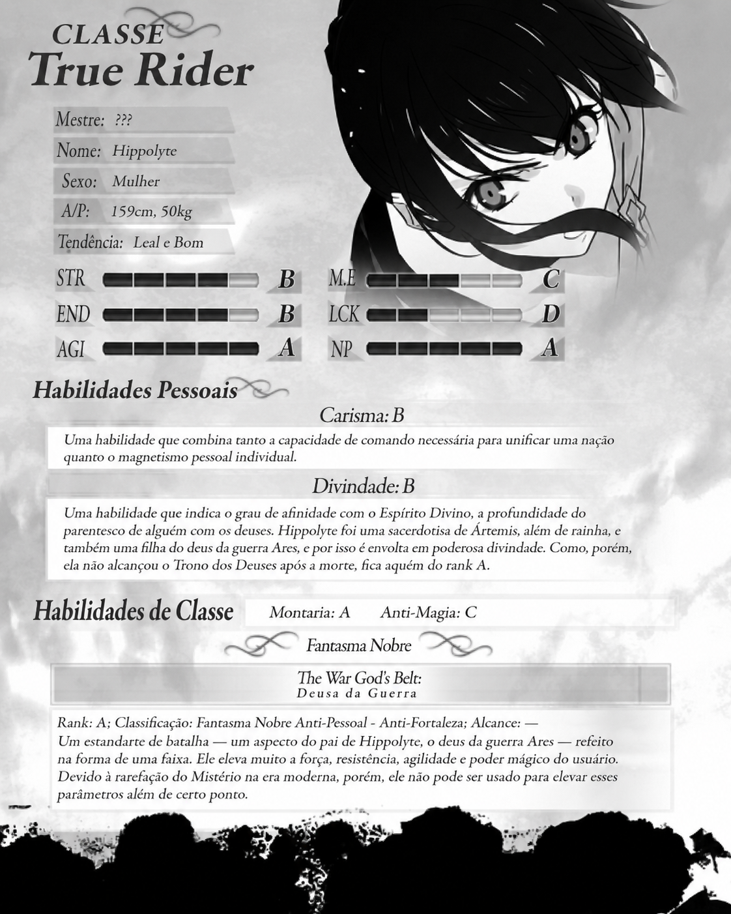

Um Dia, na Cidade
Snowfield. Zona urbana.
O que estou vendo?
Agarrando a prótese da mão direita, o jovem — membro do Clã Calatin, a unidade especial sob comando do chefe de polícia — ofegou diante da cena que se desenrolava diante de seus olhos.
Ele viu um arqueiro de pele castanho-avermelhada e um estranho pano pendendo sobre a cabeça. Aquele Espírito Heroico não era nada parecido com o Assassin contra quem haviam lutado na delegacia. Também não se parecia em nada com o monstro que depois arrancara a mão direita do rapaz. Ele era simplesmente, simplesmente... forte.
Mesmo que conseguissem extrair todo o poder de todos os seus Fantasmas Nobres, o jovem oficial não tinha a menor confiança de que qualquer um deles seria útil contra aquele arqueiro.
Ah, entendi. Então é isso que é um herói de verdade, o oficial quase reconheceu. Então cerrou os dentes.
...Esse cara? O desgraçado que está destruindo a cidade e tentando matar uma criancinha?
Vários de seus companheiros do Clã Calatin já jaziam no chão ao redor dele. Se o poder fosse razão, então o arqueiro diante dele devia estar "certo". O último fiapo de orgulho do oficial, porém, não lhe permitia aceitar isso. Foi ele que acendeu uma chama de coragem em seu coração.
Então ele voltou a prender a respiração. O que estou vendo?
Ele viu um policial igualzinho a si mesmo. Aquele oficial, porém, não fazia parte do Clã Calatin. Havia algo de estranho nele.
Eles ainda estão lutando contra aquele monstro. Quem diabos são eles?
Ele aparecia e desaparecia, desaparecia e reaparecia ao redor do arqueiro. Vez após vez seu corpo era dilacerado ou perfurado por flechas, mas o mesmo oficial continuava a desafiar o Espírito Heroico. Seus ataques não causavam dano algum ao arqueiro. Mesmo assim, eles já vinham lutando sem parar havia minutos.
Quando aquela cena bizarra já se arrastava havia algum tempo, o arqueiro falou com solenidade.
"Fracote... eu perguntaria seu nome."
O oficial deu um passo para trás.
"Eu não tenho nome", respondeu, abrindo um largo sorriso.
Então já havia dois oficiais. Continuaram falando com a mesma voz.
"Ó grande herói, você que continua vivendo nas lendas da Era dos Deuses, mudando de forma com o passar do tempo e acumulando grandes feitos: eu, um humilde criminoso, tão fraco que uma rajada de vento poderia me levar embora, tenho apenas uma coisa a lhe dizer."
O número de oficiais aumentou de novo.
"Tenho certeza de que você tem um motivo para sua determinação", declararam os quatro oficiais ao redor do arqueiro. "Mas se essa determinação o leva a negar o poder divino! Se você nega e descarta todos os feitos dos deuses, bons e maus igualmente!"
As oito "coisas" haviam assumido várias aparências além da de policiais. Suas vozes ecoavam pela rua da cidade.
"Por mais poderoso que você seja, agora é, como desejava, humano."
Dezesseis rugidos se dirigiram à alma do arqueiro.
"Ó herói que caiu na brutalidade, na humanidade! Por maior que você seja! Mesmo que tenha o poder de destruir o mundo!"
Trinta e dois sorrisos destemidos cercaram o arqueiro. No instante seguinte, estavam desaparecendo, como se fossem absorvidos de volta pelo original.
"Enquanto sua essência for humana... você será caçado por um 'assassino' sem poder." Então o policial — o Berserker sem nome, Jack the Ripper — encarou o arqueiro de pele castanho-avermelhada. Expondo a própria essência, gritou o nome de seu Fantasma Nobre — o trunfo com que pretendia pôr fim à vida do grande herói.
"From Hell!"
Em meio à Guerra do Santo Graal em desintegração, uma cadeia de batalhas começou em silêncio. Quase como se um destino infeliz falasse aos magos e Espíritos Heroicos:
"Ó fracos, desafiem os fortes."
próximo episódio: [Fake04]

